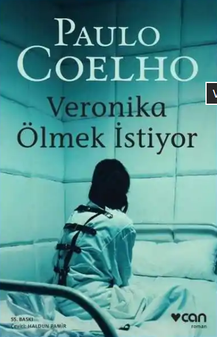
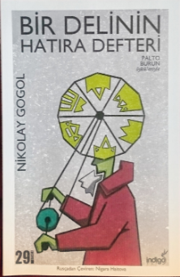

Görünüşte her şeye sahip olan ancak hayatın tekdüzeliğinden bunalan genç ve güzel Veronika, sıradanlığa dayanamayarak intihar girişiminde bulunur. Uyandığında kendisini ülkenin en ünlü akıl hastanesi olan Villete’de bulur. Doktorlar, aldığı hapların kalbine geri dönülemez bir zarar verdiğini ve sayılı günleri kaldığını söyler.
Ölümün kıyısında olduğu bu sürede Veronika, hastane ortamının sunduğu yadırganmama özgürlüğüyle tanışır ve şizofren bir genç olan Eduard’a yakınlık duyar. Dış dünyada bastırdığı tüm duyguları burada keşfeden Veronika, hayata sımsıkı bağlanmanın aslında en büyük mucize olduğunu fark eder. "Delilik" ve "normallik" kavramlarını sorgulayan bu eser, bireyin kendi özgürlüğünü keşfetme sürecini sarsıcı bir dille anlatır.

Psikiyatrist bir yazarın, idam edilmeyi bekleyen Firdevs ile yaptığı görüşmeden esinlenen roman, bir kadının çocukluktan ölüme uzanan sarsıcı hikayesini anlatır. Yoksul bir köyde başlayan hayatı; şiddet, istismar ve toplumsal ikiyüzlülükle şekillenen Firdevs, hayatta kalabilmek için sürekli kaçış yolları arar. Evlilikten iş hayatına kadar her alanda erkek egemen sistemin (patriyarka) farklı maskeleriyle karşılaşan Firdevs, sonunda kendi bedeninin ve tercihlerinin bedelini ödemeye karar verir.
Bir adamı öldürdüğü için idama mahkum edilen Firdevs, affedilme talebini reddederek "sıfır noktası" dediği o eşsiz yere yerleşir: artık kaybedecek hiçbir şeyi kalmamıştır ve bu yüzden korkutulamaz biridir. Sosyal psikoloji ve feminist edebiyatın temel taşlarından biri olan bu eser; mülkiyet, şiddet ve saygınlık kavramlarını bir kadının trajik ama onurlu direnişi üzerinden teşrih eder.

Sıradan bir memur olan Akaki Akakiyeviç, vaktini sadece yazıları kopyalamakla geçiren, yoksul ve çevresi tarafından alay edilen bir karakterdir. Yıllardır giydiği eski paltosu artık onu soğuktan koruyamaz hale gelince, büyük zorluklarla para biriktirip yeni bir palto yaptırır. Ancak büyük bir heyecanla giydiği bu palto, bir gece hırsızlar tarafından çalınır.
Yardım istemek için gittiği "Önemli Kişi" (amir) tarafından sertçe azarlanan ve odasından kovulan Akaki, yaşadığı derin üzüntü ve korku nedeniyle hastalanarak ölür.Akaki’nin ölümünden sonra şehre yayılan bir söylentiye göre, hayaleti geceleri insanların paltolarını çalmaya başlar. En sonunda, kendisine kötü davranan amirin de paltosunu alan Akaki’nin ruhu, adaleti kendi yöntemleriyle aradıktan sonra bir daha görülmez.